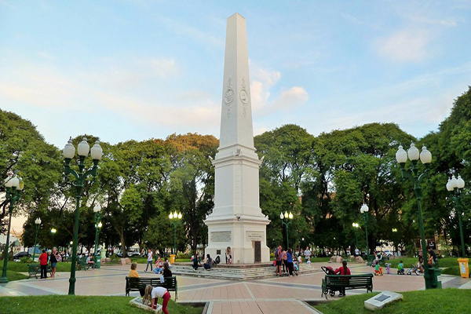

Plaza General Francisco Ramírez
En 1956 fue declarado Lugar Histórico Nacional. Plaza General Francisco Ramírez (L.H.N.) y Pirámide en homenaje al Gral. Francisco Ramírez Sitio histórico central de la ciudad definido por Don Tomás de Rocamora en el momento de la fundación, el 25 de junio de 1783. Toma ese nombre a partir de la sanción de la ley del 30 de octubre de 1827. Es Lugar Histórico Nacional porque allí se leyó el Bando del Pronunciamiento de Urquiza contra Rosas, dando comienzo a un proceso que culminó con la Batalla de Caseros (3/2/52) y la sanción de la Constitución Nacional de 1853. A lo largo de su historia tuvo diferentes diseños.
Leer más